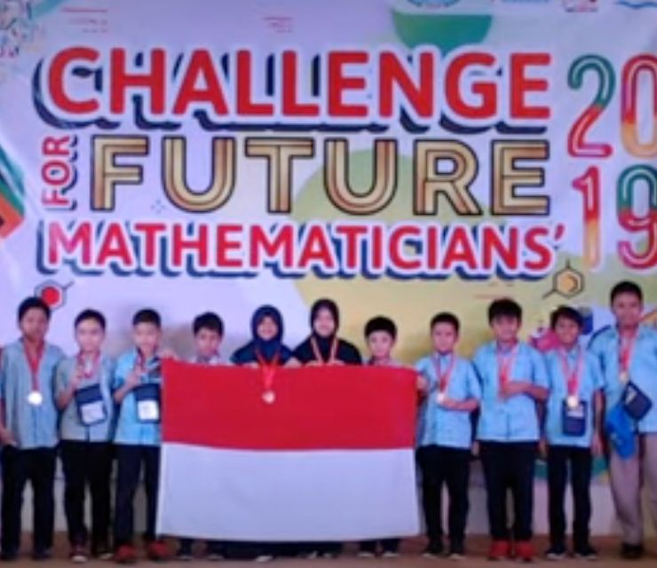
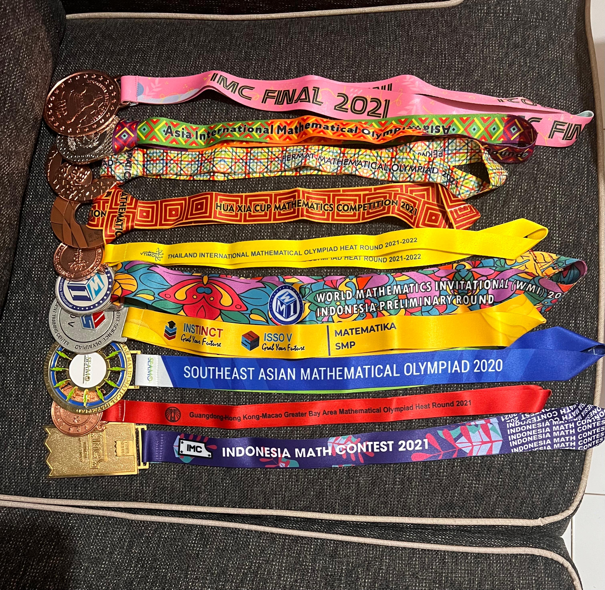
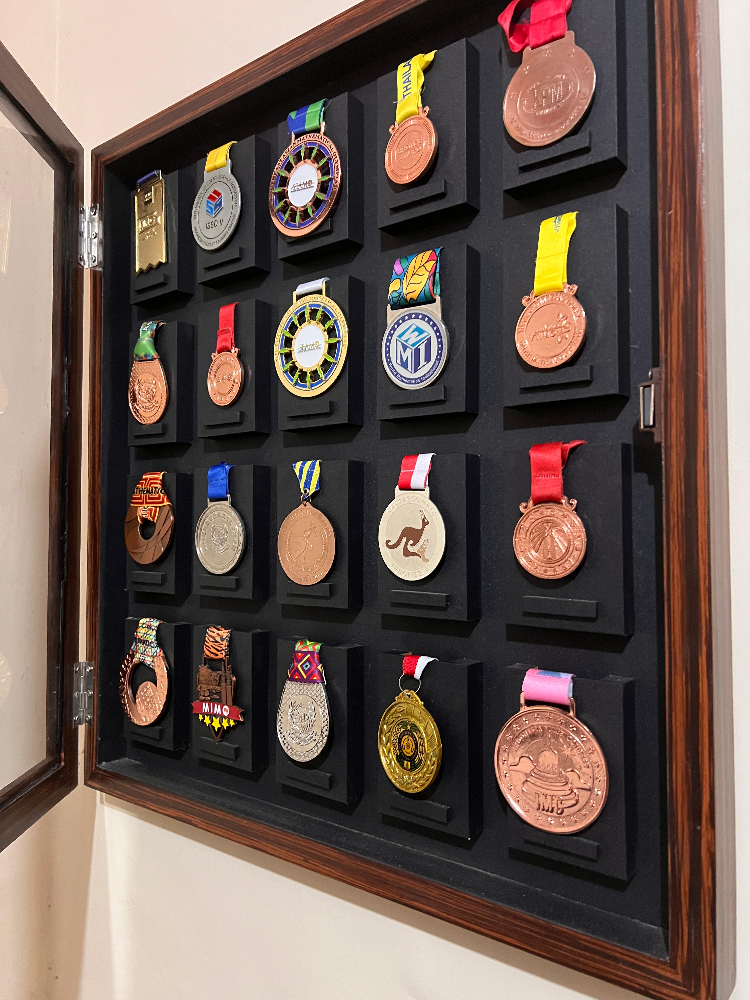

Prestasi Terbaik Saat SD
Salah satu momen paling berkesan dalam masa SD saya adalah ketika berhasil meraih Bronze Medal dalam lomba matematika bergengsi tingkat internasional Challenge for Future Mathematicians (CFM) 2019. Lomba yang digelar pada 27–30 Desember di Bogor ini diikuti oleh lima negara, yaitu Indonesia, Filipina, Vietnam, Thailand, dan Malaysia. Medali ini menjadi pencapaian internasional pertama saya yang meninggalkan kesan mendalam.
Sebelumnya, saya pernah mengikuti lomba internasional di Malaysia, namun belum berhasil meraih medali. Dari pengalaman itu, saya semakin terpacu untuk belajar dan mempersiapkan diri lebih baik pada perlombaan berikutnya. Alhamdulillah, usaha tersebut membuahkan hasil ketika akhirnya saya meraih medali perunggu di CFM.
Selain CFM, saya juga beberapa kali mengikuti heat round nasional serta lomba internasional lain,
seperti TIMO di Thailand, SEAMO di Australia, dan Big Bay Cup di China,
di mana saya juga berhasil memperoleh medali perunggu. Saat itu saya merupakan siswa kelas 6
MIN 1 Kota Malang. Saya bangga bisa membawa nama sekolah dan keluarga, meskipun
saya sadar masih harus banyak belajar lagi. Dengan dukungan guru dan orang tua, saya percaya motto
Tiada Hari Tanpa Prestasi
akan terus menjadi penyemangat saya untuk meraih pencapaian berikutnya.
Prestasi Saat SMP
Saat menempuh pendidikan di MTsN 1 Kota Malang, saya bergabung dengan Klub Olimpiade Matematika dan rutin mengikuti bimbingan intensif. Dari sini, saya mendapat banyak kesempatan untuk mewakili sekolah dalam berbagai lomba, baik tingkat kabupaten, nasional, maupun internasional.
Sejak SD hingga MTs, saya sudah terbiasa mengikuti kompetisi matematika, mulai dari lomba internasional, heat round internasional, hingga lomba tingkat nasional. Tidak jarang saya berhasil membawa pulang medali—emas, perak, maupun perunggu—sehingga semakin memantapkan minat saya di bidang ini.
Prestasi Saat SMP
Masa sekolah saya juga bertepatan dengan periode pandemi Covid-19, sehingga banyak lomba diselenggarakan secara online. Walaupun daring, kompetisi tersebut tetap bergengsi karena diadakan oleh lembaga-lembaga ternama, seperti Klinik Pendidikan MIPA (KPM), Terry Chew Academy, hingga organisasi matematika bergengsi di Asia. Sistem pengawasan lomba sangat ketat dan biaya pendaftarannya pun tidak murah, sehingga kualitas kompetisinya tetap terjaga. Bagi saya, setiap ajang adalah pengalaman berharga yang membuat saya semakin termotivasi untuk terus berprestasi dan membawa nama baik sekolah.